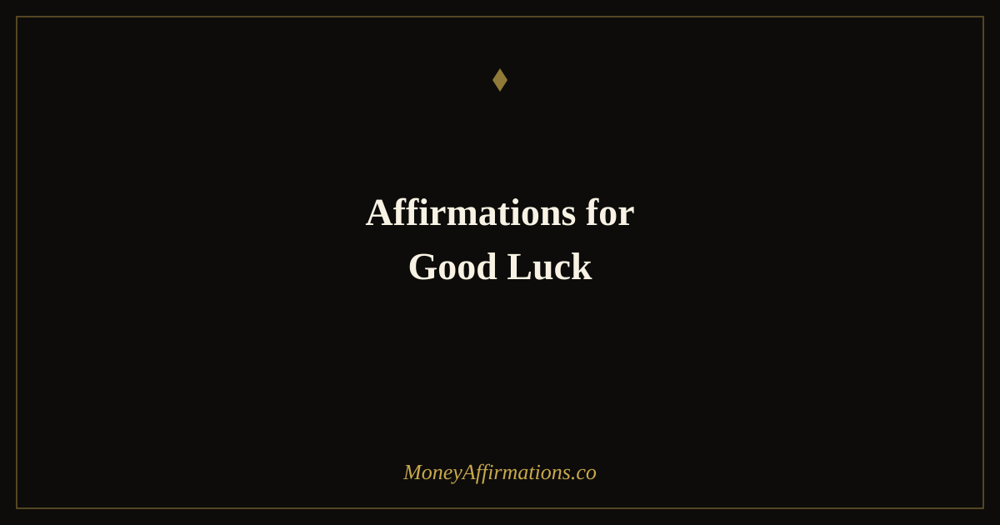

Affirmations for Good Luck: 30 Statements to Create Your Own Fortune

Good luck is often spoken about as though it arrives from outside — a random gift distributed unevenly by an indifferent universe. But decades of psychological research paint a very different picture. Lucky people are not people to whom more good things randomly happen. They are people who have developed a set of mental habits that increase the frequency with which they notice opportunities, act on them, and recover when things do not go to plan.
These 30 affirmations for good luck are grounded in that insight. They are not about superstition or passive waiting — they are about cultivating the preparation, openness, confidence, and positive expectation that characterise the people we describe as consistently fortunate. Good luck, it turns out, is a practisable skill, and it starts with what you believe.
What are affirmations for good luck?
Affirmations for good luck are present-tense statements that build the mindset associated with consistently fortunate outcomes. They cultivate the specific beliefs and orientations that make a person more likely to notice and act on opportunity: positive expectation, confidence in the face of uncertainty, openness to the unexpected, and resilience after setbacks.
Unlike passive luck charms or wishes, these affirmations focus on the internal conditions you can deliberately develop. They align naturally with the broader abundance affirmations collection, where openness to receiving and positive expectation form the foundation of a genuinely prosperous mindset.
30 affirmations for good luck
- I create the conditions for good luck by showing up prepared and open.
- I notice opportunities that others overlook because I expect them to be there.
- My positive expectation makes fortunate outcomes more likely, not less.
- I act on promising possibilities rather than letting them pass by untouched.
- I prepare thoroughly, so when good fortune arrives I am ready to use it.
- I trust my instincts to guide me toward the right choices at the right moment.
- I place myself in situations where fortunate encounters are more likely to happen.
- I recover quickly from setbacks because I know they are not the end of my story.
- Every situation I enter holds the possibility of a positive and unexpected outcome.
- I stay open to the accidental and the unplanned, knowing they often carry gifts.
- My confident, curious approach to life draws good things in my direction.
- I follow through on small hunches because I know they sometimes lead somewhere important.
- I take the first step even when the path is not fully visible, and fortune meets me there.
- I look for the opportunity inside every setback, and I almost always find one.
- My network grows because I invest genuinely in other people, and that investment returns.
- I expect things to work out well, and that expectation changes how I approach them.
- I am prepared financially, professionally, and mentally for good fortune to arrive.
- I say yes to promising opportunities rather than talking myself out of them.
- Good timing finds me because I am consistently in motion rather than waiting to begin.
- I interpret unexpected changes as redirections, not defeats.
- My resilience means that even when things go wrong, I end up in a better position.
- I contribute value freely, and that contribution has a way of returning to me multiplied.
- I keep my eyes open for the small coincidences that sometimes change everything.
- I create luck every time I act rather than hesitate at a promising threshold.
- My curiosity leads me to places where interesting and fortunate things happen.
- I build the skills today that will look like luck to others tomorrow.
- I am attracting fortunate circumstances through my consistent, courageous choices.
- I enter new rooms, new conversations, and new possibilities with genuine openness.
- What looks like luck from the outside is the compound interest of consistent preparation.
- I am in the right place at the right time because I choose my places and times deliberately.
How to use these affirmations
The most effective way to use these affirmations is to connect them directly to action. Because luck is, in this framework, an active process rather than a passive state, pairing each affirmation with a behavioural intention amplifies its effect significantly. After speaking an affirmation like "I act on promising possibilities rather than letting them pass," immediately ask yourself: what is one promising possibility in my life right now that I have not yet acted on?
Morning is an ideal time for this practice. Begin with three to five affirmations, then spend two minutes identifying one concrete action you can take today that aligns with the luck-creating behaviours they describe. This links the belief directly to behaviour, which is where the actual change happens.
You can also use a single affirmation as a pre-action anchor. Before a meeting, a negotiation, a financial decision, or any moment where you want to show up with confident openness, take three seconds to silently repeat one statement from this list. This brief mental reset disrupts anxiety-driven thinking and replaces it with the kind of expectant, alert orientation that makes fortunate outcomes more available.
The psychology of luck — what the research actually shows
Psychologist Richard Wiseman conducted one of the most significant empirical studies of luck ever undertaken. Over ten years, he interviewed and studied hundreds of people who identified themselves as either consistently lucky or consistently unlucky, and compared their objective circumstances, personalities, and behaviours.
His findings were striking. Lucky and unlucky people did not experience meaningfully different frequencies of random events. What differed was how they noticed, interpreted, and responded to those events. Lucky people scored significantly higher on measures of extraversion, openness to experience, and low neuroticism. They were more likely to talk to strangers, follow unexpected opportunities, and interpret chance encounters as potentially significant. They also held a relaxed, open body posture that made them more noticeable and approachable to others — literally increasing the probability of being approached with interesting propositions.
Crucially, unlucky people missed opportunities that were in plain sight. In one famous experiment, Wiseman left a twenty-pound note on the pavement and sent lucky and unlucky individuals past it. Lucky people noticed it far more often — not because their eyesight was better, but because they were moving through the world in a more alert, open, and expectant state.
When Wiseman taught unlucky people to adopt the mental habits of lucky people — expecting good outcomes, following intuition, turning bad luck into good by reframing setbacks — they reported that their lives had become measurably luckier within a month. The affirmations in this collection are designed to install exactly those habits.
Tips to make these affirmations work faster
- Act on one small hunch each day. Lucky people act on intuitive nudges; unlucky people rationalise them away. Choose one small promising action today that feels slightly outside your comfort zone and do it. The results will compound.
- Expand your social exposure. A significant portion of luck arrives through other people. Attend an event you would usually skip, introduce yourself to someone new, or reconnect with a contact you have not spoken to in months. New conversations create new possibilities.
- Reframe every setback within 24 hours. Write down one thing a recent setback has made possible that would not otherwise be available. Resilient reframing is one of the most documented habits of consistently lucky people.
- Prepare actively, not anxiously. Preparation that comes from confident expectation — "when this good thing happens, I will be ready" — is qualitatively different from anxious preparation. Use these affirmations before preparation sessions to set the right internal tone.
- Review your noticing. At the end of each day, write down one opportunity you noticed but did not act on, and ask yourself: what would it take to act on that tomorrow? Expanding your action rate on noticed opportunities is one of the fastest routes to becoming luckier.
Frequently Asked Questions
Can affirmations create good luck?
Affirmations create the internal conditions that make fortunate outcomes more likely. Research by psychologist Richard Wiseman found that so-called lucky people are not experiencing more random good fortune — they are noticing more opportunities, acting on them more readily, and recovering from setbacks faster. Affirmations that cultivate these habits of mind — openness, expectation, resilience — directly increase the behaviours associated with being lucky.
What do lucky people believe that unlucky people do not?
Lucky people consistently hold four beliefs that unlucky people lack: they expect good things to happen, they trust their intuition, they are open to accidental opportunities, and they see failure as temporary rather than defining. These are not personality traits assigned at birth — they are cultivatable mindsets. Affirmations target exactly these beliefs, gradually shifting your default orientation from defensive and pessimistic to open and expectant.
How are affirmations for good luck different from luck affirmations?
Affirmations for good luck focus on the active, behavioural side of luck — preparation, noticing opportunity, acting with confidence, and creating the conditions for fortunate outcomes through deliberate choices. Luck affirmations tend to be more identity and reception-oriented: affirming yourself as a lucky person and opening yourself to fortune arriving. Both practices are valuable and complement each other well.
For a broader exploration of the receiving and identity side of fortunate living, the full abundance affirmations collection offers 80 statements to deepen your openness to financial and material prosperity arriving in your life.